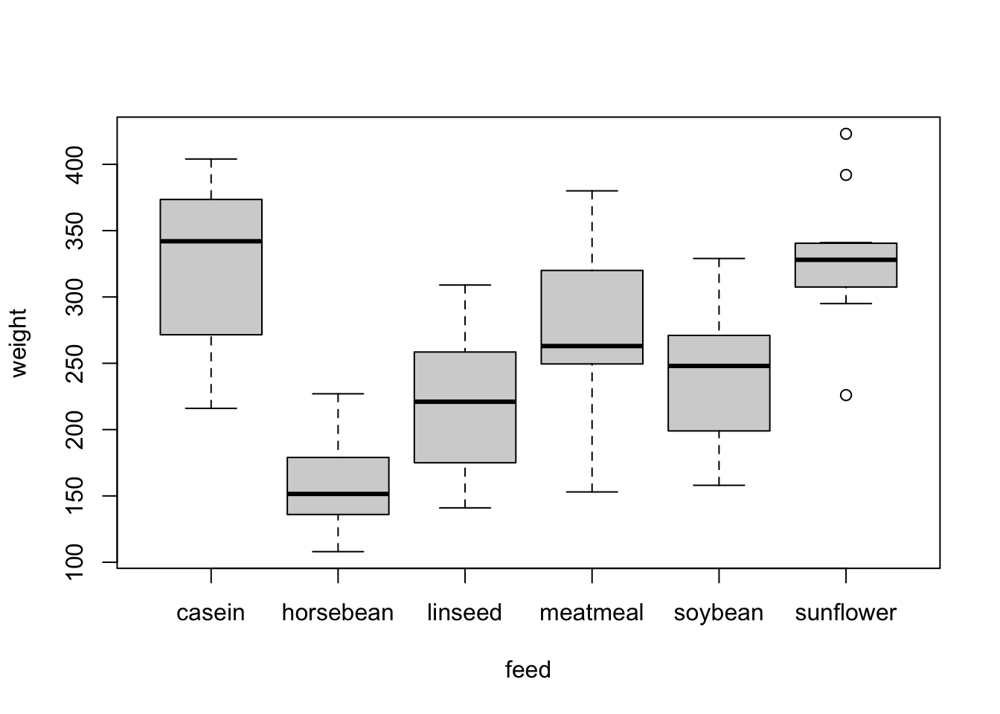

Chapter 9 Inference Based On Two Samples
In Chapters 7 and 8, we explored hypothesis tests and confidence intervals for making statistical inferences about a single population parameter. In this chapter, we will expand these methods to compare two population parameters. We’ll cover hypothesis tests for both independent and paired samples using z-tests and t-tests, as well as tests for comparing two population proportions. Additionally, we will introduce confidence intervals for the difference between two parameters and discuss the concept of statistical power in the context of two-sample inference.
9.1 z-tests and Confidence Intervals for a Difference Between Two Population Parameters
Example 9.1 A manufacturer produces two types of industrial batteries, Model A and Model B, which are used in renewable energy systems. The company claims that the lifespan of both battery models is approximately the same, but an engineering team wants to verify this by conducting a study. They know the population standard deviations of the lifespans for both models from previous extensive testing.
A sample of 15 Model A batteries has an average lifespan of 8.5 years with a known population standard deviation of 1.2 years. A sample of 15 Model B batteries has an average lifespan of 9.1 years with a known population standard deviation of 1.5 years. The engineers perform a hypothesis test to determine if there is sufficient evidence to suggest a difference in the average lifespan between the two battery models.
- One way to test this claim is create a confidence interval for the difference in means (\(\mu_1 - \mu_2\)).
- Another approach to testing this claim is to see how consistent that sample is with initial hypothesis of \(\mu_1-\mu_2=0\).
Note: We must make an assumption of whether the samples from the two populations are independent or dependent. In this section (9.1) and the next section (9.2), we will assume the samples are independent.
Assumptions for Comparison of Independent Samples
- \(X_1, X_2, \ldots, X_{n_1}\) are a random sample from a distribution with mean \(\mu_1\) and variance \(\sigma_1^2\).
- \(Y_1, Y_2, \ldots, Y_{n_2}\) are a random sample from a distribution with mean \(\mu_2\) and variance \(\sigma_2^2\).
- The X and Y samples are independent.
Notation
Theorem 9.1 If X and Y are independent, then
\(E[\bar{X}-\bar{Y}] = \mu_1 - \mu_2\)
\(Var(\bar{X} - \bar{Y}) = \frac{\sigma_1^2}{n_1} + \frac{\sigma_2^2}{n_2}\) (\(\sigma_1^2\) and \(\sigma_2^2\) may be unknown)
Proof:
Writing Hypotheses for Difference in Means
Testing \(\mu_1 \neq \mu_2\)
Testing \(\mu_1 > \mu_2\)
Testing \(\mu_1 < \mu_2\)
We can complete a hypothesis test for the difference in means (assuming the variances or standard deviations of the two populations are known) by using the following test statistic.
\[z= \frac{(\bar{x_1}-\bar{x_2})-D_0)}{\sqrt{\frac{\sigma_1^2}{n_1} + \frac{\sigma_2^2}{n_2}}}\]
Example 9.2 A sample of 15 Model A batteries has an average lifespan of 8.5 years with a known population standard deviation of 1.2 years. A sample of 15 Model B batteries has an average lifespan of 9.1 years with a known population standard deviation of 1.5 years. The engineers perform a hypothesis test to determine if there is sufficient evidence to suggest a difference in the average lifespan between the two battery models.
A two-sided confidence interval for the difference in means can also be completed with the following formula, assuming again that the population standard deviations are known.
\[(\bar{x}_1-\bar{x}_2) \pm z_{\alpha/2} \cdot \sqrt{\frac{\sigma_1^2}{n_1}+\frac{\sigma_2^2}{n_2}}\]
9.2 The Two-Sample t-test and Confidence Interval
If the population standard deviations of the two populations are unknown, we can estimate them and use similar methods as in section 9.1.
A confidence interval for the difference in means can be completed with the following formula if the population standard deviations are unknown.
\[(\bar{x}_1-\bar{x}_2) \pm t_{\alpha/2,\nu} \cdot \sqrt{\frac{s_1^2}{n_1}+\frac{s_2^2}{n_2}}\]
For the above confidence interval, you must calculate the degrees of freedom (\(\nu\)). Round the value of \(\nu\) to the next lowest integer if it is not a whole number.
\[\nu = \frac{\big(s_1^2/n_1 + s_2^2/n_2\big)^2}{(s_1^2/n_1)^2/(n_1-1) + (s_2^2/n_2)^2/(n_2-1)}\]
Example 9.3 It has been claimed that people in Okinawa live longer on average than people on the Japanese mainland. To investigate this, a study is conducted. A random sample of 25 people from Okinawa shows an average lifespan of 84.7 years, with a sample variance of 25 years². Meanwhile, a sample of 22 people from the Japanese mainland finds an average lifespan of 83.2 years, with a sample variance of 20 years².
We will use this data to calculate a 95% confidence interval for the difference in average lifespan between Okinawa and the Japanese mainland. Given the sample sizes and variances, the degrees of freedom for the test can be approximated as 43. The goal is to determine whether there is a statistically significant difference in the average lifespan between the two populations.
We can complete a hypothesis test for the difference in means (assuming the variances or standard deviations of the two populations are unknown) by using the following test statistic. This is called a two-sample t-test.
\[t= \frac{(\bar{x}_1-\bar{x}_2-D_0}{\sqrt{\frac{s_1^2}{n_1} + \frac{s_2^2}{n_2}}}, df = \nu \]
\[\nu = \frac{\big(s_1^2/n_1 + s_2^2/n_2\big)^2}{(s_1^2/n_1)^2/(n_1-1) + (s_2^2/n_2)^2/(n_2-1)}\]
Example 9.4 Using the data from the Okinawa life expectancy study, conduct a hypothesis test at a significance level of \(\alpha = 0.05\) to determine if the average lifespan in Okinawa (\(\mu_1\)) is significantly greater than the average lifespan on the Japanese mainland (\(\mu_2\)).
9.3 Analysis of Paired Data
In the previous two sections, we assumed that the two samples were independent. However, this assumption does not always hold true in practice.
Example 9.5 Examples of paired samples include:
Before/after studies: The same individuals are measured before and after an intervention.
Matched-pair designs: For example, comparing blood pressure in the right and left arms of the same individuals.
Sibling studies: Measuring certain traits (e.g., height or test scores) in siblings to see if there are significant differences.
Repeated measurements: Taking the same measurement under different conditions (e.g., testing reaction time under different levels of noise for the same participants).
Definition 9.1 A sample is paired if the same subjects or closely matched subjects are measured twice under different conditions.
A paired t-test helps control for differences between individuals by focusing on the differences between the paired measurements.
Advantage: A paired t-test allows us to use a smaller sample size because it reduces the variance that comes from differences between individuals, leaving only the variation between the paired measurements themselves.
Disadvantage: It’s not always feasible to collect paired data. If this is the case, you can use a two-sample t-test under the assumption that the samples are independent.
CI and Hypothesis Tests for Paired Samples (\(\mu_d\))
When doing inference for the true average change (\(\mu_d\)), we compare ``treatments” (e.g. before/after) on an individual level.
Create a ``new”, single sample based on the sample differences:Using the ``new’’ sample, use the same procedures for inference as for a single population.
\[t = \frac{\bar{d}-\mu_{d_0}}{s_d/\sqrt{n}}, df = n-1\]
\[\bar{d} \pm t_{\alpha/2,n-1} \cdot \frac{s_d}{\sqrt{n}}\]
Example 9.6 A pharmaceutical company is testing a new drug designed to lower blood pressure. They select a group of 10 patients with high blood pressure and measure their systolic blood pressure before and after administering the drug. The company wants to know if the drug significantly lowers blood pressure. Assume that the differences in blood pressure before and after the treatment are approximately normally distributed. Complete a six-step hypothesis test to test the claim the average systolic blood pressure is less after receiving the drug at \(\alpha=0.05\).
9.4 Inferences Concerning a Difference Between Population Proportions
We can complete a hypothesis test for the difference in proportions.
\[z = \frac{(\bar{p_1}-\bar{p_2})-D_0}{\sqrt{(\hat{p}\cdot (1-\hat{p})\cdot(\frac{1}{n_1} + \frac{1}{n_2})}}\]
\[\hat{p} = \frac{n_1}{n_1+n_2} \bar{p_1} + \frac{n_2}{n_1+n_2} \bar{p_2}\]
We can also create a confidence interval for the difference in proportions.
\[(\bar{p_1}-\bar{p_2}) \pm z_{\alpha/2} \cdot \sqrt{\frac{\bar{p_1}(1-\bar{p_1})}{n_1} + \frac{\bar{p_2}(1-\bar{p_2})}{n_2}}\]
Example 9.7 A study is conducted to compare the proportion of college students who binge drank in the last year at two campuses: CSU-Fort Collins and CSU-Pueblo. A random sample of 80 students from CSU-Fort Collins found that 44 of them reported binge drinking in the past year. Meanwhile, a sample of 75 students from CSU-Pueblo found that 45 of them reported binge drinking.
Create a 90% confidence interval for the difference in proportions of binge drinking between the two campuses. Additionally, test whether there is significant evidence to suggest that one campus has a higher proportion of binge drinkers than the other.
9.5 Statistical Power
Statistical power is an essential concept in hypothesis testing, representing the probability that a test correctly rejects a false null hypothesis. In other words, it quantifies how likely we are to detect an effect when there is one.
Definitions
Type I error (\(\alpha\)): The probability of rejecting the null hypothesis when it is actually true. For instance, if \(\alpha = 0.05\), there is a 5% chance of incorrectly rejecting the null hypothesis when it is true.
Type II error (\(\beta\)): The probability of failing to reject the null hypothesis when it is false.
Statistical Power: Defined as the probability of rejecting the null hypothesis when it is false, i.e., correctly detecting a true effect.
\[ \text{Power} = 1 - \beta = P(\text{Reject } H_0 \>|\> H_0 \text{ is false}) \]
Power depends on several factors:
The effect size (how large the true difference is between the groups).
The sample size (larger sample sizes increase power).
The significance level (\(\alpha\)).
The variability in the data (lower variability increases power).
Example 9.8 Consider a study to test the effectiveness of a new online learning platform for improving exam scores. The platform’s developers claim that it will increase the average exam score by 5 points compared to traditional learning methods. Previous studies show that the standard deviation of exam scores is 10 points. You decide to conduct a study with 50 students in each group (online and traditional learning).
Null Hypothesis (\(H_0\)): The mean exam score is the same for both groups.
Alternative Hypothesis (\(H_a\)): The mean exam score for the online group is higher by 5 points.
We want to know the statistical power of detecting this difference if it exists, using an online power calculator instead of hand calculations.
Step-by-Step Power Analysis
Determine effect size: Using Cohen’s \(d\), the effect size can be calculated as: \[ d = \frac{\mu_1 - \mu_2}{\sigma} = \frac{5}{10} = 0.5 \] This represents a moderate effect size.
Choose significance level (\(\alpha\)): Set \(\alpha = 0.05\) for a 5% risk of Type I error.
Calculate Power in R: Rather than performing hand calculations, you can input these parameters into R. Simply provide the effect size, sample size, significance level, and test type (two-sample t-test).
Interpret the results: R will output the statistical power. For this example, the power may be around 0.75, meaning there is a 75% chance of detecting a 5-point difference in exam scores if the platform truly has this effect.
Cohen’s \(d\) and Effect Size Guidelines
Small effect size: \(d < 0.2\)
Moderate effect size: \(0.2 < d < 0.8\)
Large effect size: \(d > 0.8\)
Key Takeaways
Larger sample sizes increase statistical power, as they provide more data to detect true differences.
Larger effect sizes (i.e., bigger differences between the groups) also increase power.
Smaller variability (lower standard deviation) enhances the power of a test by making the effect easier to detect.
Example 9.9 A tech company has released a new version of their app and wants to compare user engagement time (in minutes) between the new version and the old version. Suppose the standard deviation of engagement time is 20 minutes, and they expect the new version to increase engagement by 10 minutes. They plan to randomly select 100 users for each version.
- Null Hypothesis (\(H_0\)): There is no difference in engagement time between the two versions.
- Alternative Hypothesis (\(H_a\)): Engagement time is higher for the new version by 5 minutes.
Using R, determine the probability of detecting this 5-minute increase with 100 users per group at \(\alpha = 0.05\), that is, calculate the statistical power.
library(pwr)
# Parameters
effect_size = 0.25 # Given effect size
n1 = 100 # Sample size for Group 1
n2 = 100 # Sample size for Group 2
alpha = 0.05 # Significance level
# Power calculation
pwr.t2n.test(n1 = n1, n2 = n2, d = effect_size,
sig.level = alpha, alternative = "greater")##
## t test power calculation
##
## n1 = 100
## n2 = 100
## d = 0.25
## sig.level = 0.05
## power = 0.5465182
## alternative = greater9.6 R Companion for Chapter 9
Example 9.10 The dataset is included in the base version of R. This dataset include 71 observations of the growth rate of chickens using a variety of feed supplements.
data(chickwts)
# pick out some random indices of the dataset and look at the elements
set.seed(2020)
chickwts[sample(x=71,size=10,replace = F),]## weight feed
## 28 250 soybean
## 22 271 linseed
## 65 318 casein
## 17 148 linseed
## 36 248 soybean
## 42 226 sunflower
## 49 325 meatmeal
## 45 334 sunflower
## 56 242 meatmeal
## 8 124 horsebeanWe can create a boxplot of the weights for the various types of feed.

Based on the boxplot, there appears be a difference in weights between casein and horsebean. To test this, let’s run the hypothesis test \(H_0: \mu_1 - \mu_2 = 0\) vs. \(H_a: \mu_1 - \mu_2 \neq 0\), where \(\mu_1\) is the true mean weight of chicks given casein and \(\mu_2\) is the true mean weight of chicks given horsebean. We will use \(\alpha = 0.05\) for the following examples.
# create new dataset of chicks given casein
chicks1 = chickwts[chickwts$feed=="casein",]
chicks2 = chickwts[chickwts$feed=="horsebean",]
t.test(chicks1$weight,chicks2$weight,mu=0)##
## Welch Two Sample t-test
##
## data: chicks1$weight and chicks2$weight
## t = 7.3423, df = 18.36, p-value = 7.21e-07
## alternative hypothesis: true difference in means is not equal to 0
## 95 percent confidence interval:
## 116.6982 210.0685
## sample estimates:
## mean of x mean of y
## 323.5833 160.2000The test statistic is \(t=7.34\) and corresponds to p-value of \(7.21 \cdot 10^{-7}\). Since the p-value is less than \(\alpha=0.05\), we would reject \(H_0\) and conclude that the true mean chick weights differ between casein and horsebean feed.
Example 9.11 Suppose we want to test if the true mean weight of casein feed chicks is more than 200 units greater than the true mean weight of horsebean feed chicks, i.e., \(H_0: \mu_1 - \mu_2 = 200\) vs. \(H_a: \mu_1 - \mu_2 > 200\).
##
## Welch Two Sample t-test
##
## data: chicks1$weight and chicks2$weight
## t = -1.6455, df = 18.36, p-value = 0.9416
## alternative hypothesis: true difference in means is greater than 200
## 95 percent confidence interval:
## 124.8371 Inf
## sample estimates:
## mean of x mean of y
## 323.5833 160.2000The test statistic for this hypothesis test is \(t=-1.6455\) with a p-value of \(0.9416\). At \(\alpha=0.05\), we would fail to reject \(H_0: \mu_1 - \mu_2 = 200\) and conclude there is not sufficient evidence to say that the true mean weight of casein feed chicks is more than 200 units greater than the true mean weight of horsebean feed chicks.